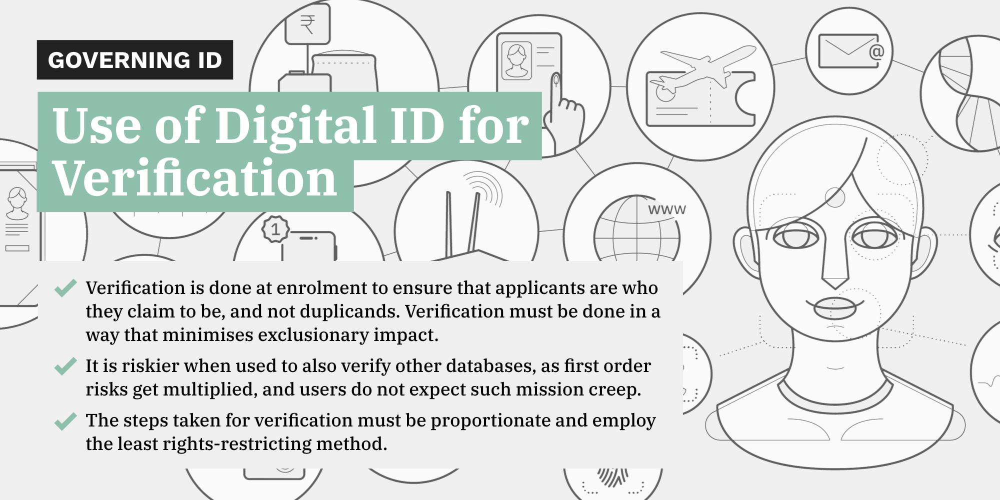

Digital Identities:
Design and Uses
A project of the Centre for Internet and Society, India
supported by Omidyar Network
Governing ID:
January 30, 2020
Research and Writing by Shruti Trikanad
Review and Editing by Amber Sinha
This is the first in a series of case studies, using our evaluation framework for the governance of digital identity systems. These case studies, which analyse identity programmes and their uses, illustrate how our evaluation framework may be adapted to study instances of digital identity across different regions and contexts. The first case study looks at the use of digital identity programmes for the purpose of verification, often using the process of deduplication.
One of the key stated purposes of modern national digital identity systems is to identify fakes and duplicands through a robust process of identification and enrolment. This process is often undertaken during the enrolment into the digital identity database itself, or in some cases also to use the identity programme to remove duplicates from other databases as well. In countries with a strong civil registration and vital statistics system (CRVS), this is often done by relying on existing databases. However, in other systems, where robust CRVS databases may not exist, there have been strategies to introduce new verification strategies such as deduplication on the basis of biometrics. For other databases, the process of seeding has been resorted to for verification. Seeding is the mapping of identity records in an existing database with those in another database, typically through a unique identifier. Both forms of verification necessarily involve excluding frauds and duplicands from the system. In cases where the digital identity system does not work in the way intended, there are clear exclusionary impacts of such uses. Below we evaluate the use of digital identity systems for the purpose of verification across three different jurisdictions — Kenya, India and Estonia. These jurisdictions have been chosen due to contrast in their governance frameworks, stages of development of the identity system and the processes for verification.
Rule of Law Tests
1.1
Legislative Mandate
Is the use of digital identity system for verification codified in valid law?
The first step of our assessment is to evaluate if the law provides for verification. In order to be a valid use, the preliminary test is whether the law governing the Digital ID prescribes the use of the digital identity system for verification.
Let us take the example of Kenya. The purpose of the proposed law to govern digital identity, the Huduma Bill, is to “establish uniqueness of identity, increase trust, and reduce the duplication of efforts in obtaining data from residents.” 1 To this extent, although not codified, the use is implicit in the purpose of the law. However, the law makes very little reference to the use itself. The Bill merely specifies in the enrolment specifications that the “Principal Secretary, upon examining the information provided, shall enrol the applicant into the NIIMS and assign the applicant a Huduma Namba.” 2 Further, the NIIMS database is intended to validate the foundational data contained in other government/civil registries.3 There is also some suggestion that the foundational data collected may be used to verify details in other databases. The proposed Bill requires agencies responsible for certain matters to validate the (functional) data they contain against the NIIMS database.4 However, it is unclear whether validation as envisaged by the Bill is in fact verification. This is an example of the law not clearly specifying verification as a purpose.
On the other hand, in India, the governing law specifies its purpose as the assigning of unique identity numbers to individuals, to ensure targeted delivery of goods/services.5 Thus, ensuring a verified and unique identity is implicit in the purpose of the Aadhaar Act. The regulations under the Aadhaar Act specify that the processing of enrolment data, completion of deduplication and other checks, and even rejection enrolment if there are duplicate enrolments, or for quality or technical reasons.6 However, it must be noted that the Enrolment Regulations were issued by the Unique Identification Authority of India (UIDAI), which is an executive body deriving its powers from the Aadhaar Act. Thus, although the use of the programme for this purpose is envisioned in the parent legislation, the framework of law that governs it entirely is a product of delegated legislation.
In contrast, in Estonia, the Population Register Act, which governs the issuance of the unique Personal Identification Code, states as its purpose the “collection of reliable information and grant of access to personal data.” 7 The Identity Documents Act regulates the issuance of identity documents, which are mandatory for Estonian residents to prove their identity for most government services. These legislations govern the digital identity framework in Estonia, and therefore have implicit in their purpose a need for verification/validation of identity and removal of any identity fraud. Further, they also lay down the requirement to verify the identity of an ID applicant and ensure its uniqueness — although not in sufficient detail — in the parent legislations itself. Thus, this is use is codified in valid law.8
For this test to be wholly satisfied the use must be identified in a valid legislative framework with potentially supporting regulations, but not be a product of rule-making by the executive.
1.2
Legitimate Aim
Does the law have a legitimate aim?
If one considers the above examples, in Kenya, the process of deduplication is meant to establish the uniqueness of an identity, for the purposes of detecting fraud and reliably collecting information or providing services. Thus, it can be said that this use is in furtherance of a legitimate aim. Similarly, in India, deduplication and verification are done with the purpose of ensuring that the identity of the person to whom a digital ID is being assigned is not fraudulent, and the identity is unique. This is in furtherance of a legitimate aim, and forms the primary purpose of the ID project. As for Estonia, the primary purpose of the Population Register is identified as the “collection of reliable data”, and that of the Identity Documents Act is issuance of authentic and unique identity documents. Thus, the uses of verification and deduplication are in line with the legitimate aim of the identity programme.
The kinds of purpose stated above fall under legitimate aim as long as they address a social need without being discriminatory.
1.3
Defining Actors and Purposes
Does the law clearly define all the actors and purposes involved in verification?
In Kenya, Section 8 of the Huduma Bill lists the mandatory uses of the Huduma Namba which include inter alia transacting in financial markets, opening a bank account etc. Thus, it envisages a broad range of actors that must use the database. The Act also does not limit or penalise the use of Huduma Namba in any manner. While currently the Bill seems to envision the interoperability of different government databases,9 it does not in any manner limit/proscribe its use by private actors. The law does not, in any manner, define the actors that can use/manage the database for the purpose of verification/deduplication.
In India, the regulations require the Authority to process enrollment data collected from enrolling agencies and complete deduplication and verification checks before issuing the Aadhaar number. Data is collected at enrollment centres or by Registrars,10 and then sent to the Authority for verification/deduplication. Although the exact bodies/organizations that constitute these persons are not specified, the categories of actors who may be involved in the verification process are adequately specific. Thus, for the use of deduplication or verification, the law is sufficiently clear on the actors that have access to the database. Without clear regulations on how such actors are chosen and governed, there still remains lacking transparency in the actors that can access the system during verification.
In Estonia, the processes of verification and deduplication during identification is largely overseen by the Authority— the Police and Border Guard Board— according to the Identity Documents Act. Where the applicant for the digital ID has not previously been issued any ID under the Act, then it is the PBGB that conducts the process of verification/deduplication.11 The Identity Documents Act also allows the Authority, who collects the personal data, to transfer it to third parties for the “identification and verification of facts relevant to the issue” and for the “issue and revocation of an identity document.” Thus, the law does not conclusively determine the actors who have access to personal data in the database during the process of verification or deduplication.
The legislative scheme must clearly identify the actors, both public and private who are involved at each stage of the process of verification.
1.4
Regulating Private Actors
Is this use of the ID system by private actors adequately regulated?
The Huduma Bill does not address the use of the identity system by private actors, and thus it is not clear the extent private actors can access the system. However, the Memorandum of Reasons and Objects notes as one of its objectives “enhanced public and private sector service delivery.” The use of the identity system by private actors is also not prohibited or regulated in any manner. Thus, the ID framework fails to govers its use by private actors.
In India, the use of the identity system for deduplication or verification purposes is restricted in the law to the executive. However, personal (and biometric) information is collected and stored by enrolment operators, who are private parties.12 The composition of this ecosystem is left to the determination of executive bodies, and often involves private actors contracting with Registrars. There is limited governance or accountability in determining registrars or enrolling agencies, and the choice of private actors to perform these integral roles is left to the discretion of the executive.
In Estonia, the ID framework does not envision the use of the ID for deduplication or verification by any actors apart from the designated authority, and private actors in contract with such authority to assist it. However, private actors have been integral in the development and maintenance of the Digital ID infrastructure, along with the technology backing the interoperability of the Digital ID systems, and are governed largely through contractual obligations with the PBGB; to the extent the governing Acts fail to address these actors, except in terms of minimum security standards they must maintain, there is inadequate regulation. Apart from this, private actors only use the Digital ID system to access information previously collected by another actor, and thus would not include verification or deduplication in the same manner. The use of the ID system by private actors in Estonia is limited.
The greater the extent of participation of private actors in the verification or deduplication process, the higher the degree of regulatory oversight which will be required.
1.5
Data Specification
Does the law clearly define the nature of data that will be collected?
In Kenya, the Huduma Bill is silent on the data that will be used to ensure deduplication or verification of identity. It merely states that persons enrolling shall furnish such proof as required and the Principal Secretary can examine the information provided to accept an application and assign a Huduma Namba. The National Registration Bureau, through the Registration of Persons Act, uses an Automated Fingerprint Identification System (“AFIS”) to perform deduplication while issuing national IDs; the AFIS is designed to accept ten inked rolled prints that are recorded on a standard form and subject to manual quality control, to deduplicate applications for ID cards. However, this is only for some users of identity services, and apart from these specific applications, deduplication can only be done on the basis of biographic information.
The Aadhaar Act, in India, specifies that persons enrolling must submit their “biometric information” and “demographic information.” 13 However it allows the scope of such information to be largely decided by executive authorities via Regulation. The Enrollment Regulations, issued by the UIDAI under the Aadhaar Act, are more specific about the nature of biographic and demographic information that will be collected from persons enrolling for the purpose of verification and deduplication. Thus, the law does identify the nature of data that will be collected with adequate specificity.
In Estonia, the Identity Documents Act itself delegates the determination of information and documents to be submitted to a “Minister responsible for the area.” Accordingly, the Ministry of the Interior issued Regulation 77 which lists out the information to be supplied with the application for a digital identity, along with the documents to be submitted as proof. Thus, once again, it is the executive that is allowed to determine the nature of the data that will be collected, although the categories of data have been adequately identified via regulation.
The use must be identified in a valid law and not be a product of rule-making by the executive.
1.6
User Notification
Does the ID system provide adequate user notification mechanisms for this use case?
In Kenya, the ID system and its surrounding framework, does not create a mechanism for notifying users while using their data for the purpose of deduplication. On the other hand, in India, although the law itself is not clear on a user notification system for the purpose of deduplication/verification, the Aadhaar (Authentication) Regulations allows users to be notified of any biometric/OTP based authentication at the time of authentication; however it is not clear if it would authentication done at the instance of deduplication.14 More notably, when seeding has been done to verify other databases, user notifications have not been provided in India. Estonia, like Kenya, does not delineate any mechanism of notifying users while conducting deduplication or verification.
Residents do not reasonably expect their enrolment data to be used for verification of other databases, yet no user notification is provided to them for such uses.
1.7
User Rights
Do individuals have rights to access, confirmation, correction, and opt out?
In Kenya, deduplication and verification are mandatory features of the identity system. Residents do not have a right to opt out of the deduplication or verification process. Moreover, in the event that conflicting data is found at the end of a deduplication/verification process, the ID holder is not even permitted to confirm which of their conflicting data is accurate.
In India as well, enrolling persons do not have the right to opt out of the deduplication/verification process as it is a mandatory feature of the ID system. However, in the event the enrollment application of a resident is rejected, they may be informed about the enrollment against which their Aadhaar number is being generated. Additionally, ID holders have the right to request for change/update of their demographic/biometric information stored in the CIDR.15
In Estonia, the Identity Documents Act does not allow enrolling individuals to opt out of the process of verification/deduplication. However, applicants have the right to access the Identity Documents Database, wherein all the information regarding an application for identity, together with all other previously issued identity documents and documents submitted as proof of identity are stored, and even to object to the veracity of the information stored therein. On receiving such objection, the controller of the database is obligated to correct it.16 The applicant also has the right to verify the correctness of the biometric data digitally entered in the document.17
The ubiquity with which there is a failure to ensure safeguards for resident’s rights during the process of verification is reflective of the lack of accountability.
1.8
Redressal Mechanisms
Are there adequate civil and criminal redressal mechanisms in place to deal with violations of their rights arising from the process of verification?
The institution of redressal mechanisms, that can be accessed at every instance of ID holders’ rights being violated, is always an important safeguard, but takes on special importance at the stage of issue of ID after verification/deduplication, as it has the potential of affecting all other rights/benefits associated with the ID. In Kenya, the governing law does not envision any redressal mechanism in case of rejection of ID because of failure of deduplication, detection of fraud, or incorrect information.
In India, the manner and circumstances of omitting or deactivating Aadhaar number of a resident during verification/deduplication is determined by the executive, as delegated by the Aadhaar Act.18 In case of insufficient or incorrect data submitted during enrolling, or if the deduplication check fails (more than one Aadhaar numbers have been issued to the same resident), the resident’s Aadhaar number is cancelled or deactivated.19 In this case, the Enrolment Regulations specify that the Authority may require a field inquiry where the resident whose Aadhaar number is to be cancelled/deactivated may be heard. The number holder will be informed about this decision, and has the option of complaining to the grievance redressal mechanism set up by the Authority.
In Estonia, an identity number is not granted if the applicant cannot be verified.20 The framework does not establish any review mechanism that rejected applicants can turn to if grant of identity number is refused.
In order to address the potentially high exclusionary costs of verification and deduplication, adequate redressal mechanisms are necessary.
1.9
Mission Creep
Is there a legislative and judicial oversight mechanism to deal with cases of mission creep in this use of Digital ID?
While regulatory mechanisms governing the administrator’s use of personal information of ID holders are not uncommon, there is typically a lack of regulatory mechanism to hold the administrator accountable while issuing the ID or in the process of verification during enrollment.
It is also important to address the problem of mission creep in deduplication, through seeding, where a system developed for one purpose is subsequently used for other purposes not originally intended.
For instance, in Kenya, there is no regulatory mechanism identified in the law that governs the administrator (the Principal Secretary) in their use of the ID system for verification. Further, all government agencies are required to be linked to the NIIMS and mandatorily authenticate the ID holders’ foundational data they contain against the database, they essentially encourage indiscriminate and widespread seeding, providing no protection against mission creep.
In India as well, while the UIDAI — the executive body designated as an Authority under the Act — can otherwise be held accountable for how it manages the ID system, it is not regulated or held accountable in any way for the process of verification. There is, in fact, limited oversight or transparency in the deduplication/verification process, because it is often considered an unimportant, innocuous step in the ID issuing procedure. Further, mission creep in the process of deduplication is evinced by the application of the Aadhaar system and its deduplication capabilities to the income tax collection process. Even the Indian Supreme Court21 held that by seeding residents’ Aadhaar details into the PAN database, duplicate and fake PAN identities will be identified in a robust manner, and tax evasion can be mitigated.
In Estonia, there is no other authority/body identified by the digital ID framework besides the administrator. The Public Information Act, which has been governing public sector databases since an amendment in 2008, gives supervisory control for determining compliance with the Act to the Data Protection Inspectorate and the Estonian Information System Authority; however, this is primarily concerned with the maintenance of the database of information, and does not extend to the process of verification in issue of ID. Further, it applies only to the public sector, notwithstanding that the private sector also maintains databases connected to the same infrastructure and leveraging the Digital ID. Thus, there is no accountability mechanism in place to govern the process of verification.
Further, the process of verification also uses seeding, by matching the ID holder’s Personal Identification Code to information contained about them in the Population Register as well as the Identity Documents Database. This is done to check the veracity of submitted information and to ensure similar identity documents have not already been issued in the past. However, there is no other recorded application of seeding or deduplication that invoke suspicions of mission creep in the use of the ID for verification, although there is also a lack of legislated prohibition/penalising of such efforts.
Rights based Tests
2.1
Data Minimisation
Are principles of data minimisation followed in the collection, use, and retention of personal data for this use case?
The principles of data minimization are respected where only such data as is relevant and necessary for the purpose of establishing identity or detecting fraud, has been collected and processed. Even the period and purpose of storage of the information collected should be analysed through the lens of data minimisation.
In the case of Kenya, the Huduma Bill specifies the data to be collected at enrolment.22 This includes biometric, biographical and other identity numbers. Further, the executive is tasked with verifying this information and issuing Huduma Nambas to the enrolling resident. Since the Bill does not specify the nature of data used in the process of deduplication, any of the collected information may be used for that purpose. Without specifying the exact nature of data used, principles of data minimisation have not been followed. Additionally, the Huduma Namba is also used to verify information contained in other civil registries (and other databases) that the Huduma Namba holder is enrolled in. However, there is no clarity on this process either, and thus the wide scope allowed does not comply with principles of data minimisation.
In India, the regulations allows the Authority to determine the nature of the data collected for verification or deduplication. The Act itself does not define the “biometric information” or “demographic information” collected during enrolment, with the exception of categorically excluding information regarding “race, religion, caste, tribe, ethnicity, language, records of entitlement, income or medical history.” 23 Further, the supporting documents submitted for proof of identity/data are also to be determined by the executive, and can be easily modified/expanded through circulars/notifications. Thus, principles of data minimisation are not being followed where the scope of data to be collected is not determined/restricted by the Act. Further, the enrollment operators are required to collect and store physical/electronic copies of the supporting documents indefinitely, without any obligation to erase/delete it.
In Estonia, the determination of the data to be collected on application is delegated to the “minister responsible for the area.” The information to be supplied when applying for a digital identity include personal data and contact details, citizenship status, Personal Identification Code, place of birth, the reason for application, nationality, mother tongue, education etc. The documents to be submitted for proof of identity include any identity document issued by the State (or a travel document issued by foreign State), or if the applicant has never been issued an identity document, then any document that proves Estonian citizenship.24 In case of e-residents, information regarding their criminal histories, social media accounts, etc is also taken. Further, fingerprints of the e-resident applicant are taken, even though there is no recorded use of it for verification or authentication. Thus, the excessive collection of data, particularly with no stated purpose, does not comply with principles of data minimisation.
Additionally, in accordance with the Statutes for the Maintenance of the Identity Documents Database, the following information is recorded in the identity documents database on an application for digital identity (apart from that submitted with the application)- data of commencement of identification, reasons for application, manner of identification and reason for the identification procedure, name & number of other identity documents issued to the person, etc. The storing of all above mentioned data at the stage of identification is not in consonance with the principles of data minimisation.
2.2
Access to Data
Does the law specify access that various private and public actors have to personal data in this use case?
In Kenya, the Huduma Bill allows other agencies that use the NIIMS identity services to also leverage the deduplication services to authenticate or validate their information. This is not restricted to public actors, and does not in any manner delineate how they may do so or what the nature of their access is.
In India, the collection and verification of data for this use case is done during enrollment by registrars and enrolling agencies.25 Registrars are usually State Governments, central ministries, banks, public sector organizations etc that have signed MOUs with the Authority. Enrolment Agencies are private contractors. They set up enrolment centres and collect biometric and demographic data as per the UIDAI enrolment process. Thus, the law is fairly prescriptive in terms of the actors that have access to personal data for deduplication/verification purposes, particularly because this falls within the key stage of identification. However, questions have been raised about access that private enrolment operators have to biometric data.
In Estonia, the collection and verification of data for this use case is restricted to the executive and those parties with whom the executive has a contract to perform verification and deduplication functions. There is tighter control on the actors involved in the process.
The governance framework must clearly regulate the actors involved in the process as well as the extent of access they have to personal data.
2.3
Mandatory Use and Exclusions
Does the mandatory use of digital identity to verify lead to exclusionary impacts?
In Kenya, the Huduma Bill does not envision any alternative mechanisms in the event the enrolment application is rejected, i.e., if deduplication or verification fails. This, combined with the fact that the programme is compulsory to access a host of government services, and that all other existing forms of ID not issued under the NIIMS Act are replaced by the Huduma Namba, is exclusionary. This is especially exclusionary because of the foundational and centralised nature of the Huduma Namba, and because residents do not have the option of registering with another substitute identity provider as is the case in Canada or the UK.
In India, the processes of deduplication and verification are mandatory, and cannot be avoided by a resident. Further, while the possession of a digital ID is not mandatory, it is required for certain necessary functions such as payment of taxes, accessing subsidies and other government services, etc. However, there are certain steps taken in the law to minimize exclusion. In cases of failure to provide biometric details, the law require a different procedure to complete verification or deduplication. In cases where residents may not have the required supporting documents, they may prove their identity through other means such as an Introducer system or Head of family based Enrolment.26 it has been statistically estimated that 1 in every 121 persons may be categorized as a “duplicand,” i.e. giving a false positive for biometric identification; and by the time the population increases to 1.5 billion, 1 in every 97 persons is expected to be a duplicand.
In Estonia, the use of ID for deduplication and verification in the process of identification is mandatory, and cannot be avoided. The Identity Documents Act allows for the use of the ID to be made mandatory in cases of public services that are provided electronically. Thus, the use of the ID itself can be exclusionary. However, verification and deduplication are done against both the Population Registry and the Identity Documents Database and in this way, exclusion is minimised, as there is already a system of data collection in place that precedes the digital ID verification process, which aids in the process of identification for the ID. Further, the deduplication does not leverage the use of biometrics (although the framework technically permits its use) and is done primarily through the Personal Identification Code. Thus, this ensures that the exclusionary effects of biometric authentication, which is fraught with error, is entirely precluded for the process of deduplication.
There are a variety of measures — regulatory, technological and redressal — which can be used to minimise the very high human costs of exclusion.
Risk based Tests
3.1
Risk Assessment
Is this use case regulated taking into account its potential risks?
The Kenyan model of interoperability of public and private databases with the NIIMS database, and particularly its reliance on the data stored therein for verification, does not seem to take into account the risks of breach of data, poor security, inaccurate data, failure of system, etc. The governing law is also completely lacking in terms of identifying, handling, and mitigating such risks.
As for India, the processes of deduplication and verification are essential functions of the identity system, and seem to be adequately regulated to ensure limited access to the data, and minimal exclusion. The administrator of the system, the UIDAI, is however, not accountable for the storage and use of inaccurate information in the database, and applicants have limited recourse against the administrator. Thus, there are several glaring risks that seem to have gone unaccounted for in the governance of the system.
In Estonia a risk-based assessment seems to be lacking in the governing framework for the process of deduplication and verification. Although all the personal data collected about an individual in the ID identification process is not stored in a central database, the Population register (a central database) is similar in its scope, as it stores data about persons, identity documents issued, court orders/cases regarding the person, education and marital status etc. Additionally, deduplication and verification for the ID are done using the personal identification code issued when a person is being registered with the Population Registry. Thus, the framework itself is disjointed and includes several rounds of data collecting. Further, the identity system, during verification and deduplication, leverages a previously constituted system of data collection that could not have foreseen its use.
Overall, we observe regulatory failures in pro-actively taking into account risk strategies in dealing with the potential and real harms of using digital identity for verification.
3.2
Response to Risks
Is there a mitigation strategy in place in case of failure?
There are no clear mitigation strategies identified in case of failure/breach of the ID system, in any of these countries. This is particularly worrisome in the case of India and Kenya, where biometrics are leveraged in the deduplication process, because of its probabilistic nature tendency to result in false positives. In Estonia, when a security flaw in around 750,000 national Digital ID cards came to light in 2017, making the ID cards susceptible to identity theft, the government took immediate preventive action and declared that the security certificates of the ID cards would be disabled.27
The response from Estonia demonstrates the manner in which a responsive regulator, with a clear mandate and resources, can intervene quickly to address risks.
Notes
| 1 | The failure to have linkage between foundational and functional systems has led to duplication in registrations of persons, wastage of resources and diminution of trust in the identity ecosystem. ↑ |
| 2 | Section 12, Huduma Namba Bill, 2019 [“Huduma Bill”]. ↑ |
| 3 | This is evident from Section 17, Huduma Bill — “(1) Upon set-up of the NIIMS database, every government agency shall authenticate foundational data they hold of an individual with the NIIMS database. (2) Every government agency delivering a public service shall be linked to the NIIMS database in such manner as to enable such agency to – (a) authenticate personal data in their possession with NIIMS; and (b) transmit, access or retrieve information necessary for the proper discharge of agency’s functions.” ↑ |
| 4 | Section 66 of Huduma Bill states that upon the completion of initial enrolment under this Act, an agency responsible for matters outlined shall validate and update functional data of individuals under their possession with the NIIMS— (a) registration of adoptions; (b) registration of marriages; (c) public pension; (d) registration of tax payers; (e) licensing and registration of drivers; (f) national health insurance; (g) provision of social security; (h) registration of refugees; (i) maintenance of public labour records; and (j) land registration ↑ |
| 5 | Aadhaar (Targeted Delivery of Financial and Other Subsidies, Benefits and Services) Act, 2016 [“Aadhaar Act”]. ↑ |
| 6 | Regulation 13 and 14, Aadhaar (Enrolment and Update) Regulations, 2016. The Aadhaar Act also clearly says that “On receipt of the demographic information and biometric information..the Authority shall, after verifying the information, in such manner as may be specified by regulations, issue an Aadhaar number.” ↑ |
| 7 | Section 4, Population Register Act, 2019. ↑ |
| 8 | Section 1, Identities Document Act, 2000. ↑ |
| 9 | This is seconded by section 6 of the Bill, which specifies that the functional data that the NIIMS database will contain is sourced by the different public agencies that use Huduma Namba in its functioning. ↑ |
| 10 | Regulation 7 and 13, Aadhaar (Enrolment and Update) Regulations, 2016. ↑ |
| 11 | Section 11, Identity Documents Act, 2000. ↑ |
| 12 | Section 3(1)(aa), Aadhaar (Amendment) Act, 2019 defines Aadhaar Ecosystem as “enrolling agencies, Registrars, requesting entities, offline verification-seeking entities and any other entity or group of entities as may be specified by regulations.” ↑ |
| 13 | Section 3, Aadhaar Act. ↑ |
| 14 | Regulation 10, Aadhaar (Authentication) Regulations, 2016. ↑ |
| 15 | Section 31, Aadhaar Act; Regulation 14 and 16, Aadhaar (Enrollment) Regulations, 2016. ↑ |
| 16 | Section 17 and 15, Statutes for the Maintenance of Identity Documents Database, 2016. ↑ |
| 17 | Section 12(6), Identity Documents Act, 2000. ↑ |
| 18 | Sections 23, 54, Aadhaar Act, 2016. ↑ |
| 19 | Regulations 27 and 28, Aadhaar (Enrolment) Regulations, 2016. ↑ |
| 20 | Section 11, 12, Identity Documents Act, 2000. ↑ |
| 21 | K.S. Puttaswamy v Union of India (II), 1 SCC 1 (2019). ↑ |
| 22 | Section 11 r/w Schedule 1, Huduma Bill. ↑ |
| 23 | Sections 3 r/w 2(k) and 2(g), Aadhaar Act, 2016. ↑ |
| 24 | Chapter 2, List of Certifications and Information to be submitted on Application of Identity Card, Regulation No. 77, 2016. ↑ |
| 25 | Regulation 7, Aadhaar (Enrolment) Regulations, 2016. ↑ |
| 26 | Regulation 9, Aadhaar (Enrolment) Regulations, 2016. ↑ |
| 27 | “What we learned from the eID card security risk?,” e-estonia, last accessed January 22, 2019, https://e-estonia.com/card-security-risk/. ↑ |
This website presents research undertaken by the Centre for Internet and Society, India on appropriate design choices for digital identity frameworks, and their implications for both the sustainable development agenda as well for civil, social and economic rights. This research is supported by a grant from Omidyar Network India.
CIS is a non-profit organisation that undertakes interdisciplinary research on internet and digital technologies from policy and academic perspectives. Through its diverse initiatives, CIS explores, intervenes in, and advances contemporary discourse and regulatory practices around internet, technology, and society in India, and elsewhere.